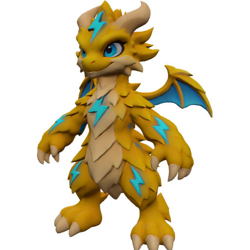
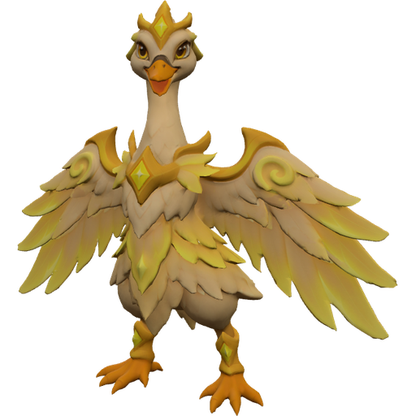

GökyolcuKut Arena oyuncusu
Kupa1 240
UstalıkSv. 23
Efsaneler kaynaşır · Kut senin elinde





Çevrimiçi hayalet havuzu bağlıGüç satılmaz · bütün kahramanlar herkese açık


 Dağ Koçu Sv.2 — yeni çerçeve açıldı!
Dağ Koçu Sv.2 — yeni çerçeve açıldı!